Как читать авторский курс и нормативные материалы
Это учебные материалы, а не заключение о соответствии конкретного продукта. Организационные модели курса отделяйте от терминов стандарта: ППК в опубликованном проекте — машиночитаемый перечень, а живой реестр его версий является практикой сопровождения. Термин OSA в разных материалах имеет разный охват. Статус и обязательность нормативного документа проверяются отдельно; проект КАПО опубликован как проект первой редакции.
М12. CodeScoring и подготовка пилота
Зачем этот модуль
Организация выбирает SCA/OSA-инструмент под собственное ТЗ, где преобладают C/C++ legacy-сборки без дисциплины пакетного менеджера. Маркетинговое «соответствует всем требованиям» здесь не работает: половина требований ТЗ либо смешивает разные режимы продукта (Proxy, plugin репозитория, CLI/агент), либо шире того, что инструмент реально подтверждает. Модуль учит превращать ТЗ в проверяемую матрицу и строить пилот так, чтобы спорные требования закрывались демонстрацией, а не обещанием.
Сквозной навык модуля — методика требование → evidence → статус:

Спорные зоны, ради которых нужен пилот
- OSA Proxy ≠ все пакетные менеджеры. Proxy-firewall подтверждён для Maven, NPM, PyPI, NuGet V3, Go, Debian, Alpine/APK, RPM, Docker Registry. Conan, Conda, RubyGems в режиме Proxy не подтверждены — это «риск несоответствия».
- C/C++ build scan: make/CMake — да, qmake — под вопрос. Сборочный анализ через агент/eBPF на GCC/Clang заявлен; qmake прямо не подтверждён и требует демо на реальном проекте.
- Готовые бинарники и статическая линковка. Архивы и контейнеры распознаются; native stripped,
.a/.soбез сборочного контекста — ненадёжно (заявлено поставщиком прямо). - Reachability (анализ вызовов) только для Java/Python/Go; IDE-плагины — VS Code и IntelliJ-based, Qt Creator не покрыт.
Материалы модуля
- 01 Конспект — методика оценки и спорные зоны.
- 02 План занятия — тайминг занятия на 90 минут.
- 03 Практическая работа — собрать матрицу и сценарии пилота.
- 04 Контрольные вопросы — проверка понимания + кейсы.
- 05 Что проверять на проекте — чек-лист аудитора пилота.
Опорные материалы раздела 07
- Матрица соответствия требованиям OSA SCA
- Критерии Go No-Go после пилота
- OSA Proxy и поддержанные экосистемы
- C C++ build scan make cmake qmake
- Статическая линковка и форки
- Ограничения готовых бинарников
- Приемочные сценарии пилота
- Документы поставщика для закупки
Связи
- Смежные модули: М08 Защита цепочки поставки и OSA · М09 C/C++ legacy · М14 Политики и риск
- Практики: П31. Пилот CodeScoring make CMake qmake · П33. AppSec и CodeScoring сравнение по задаче
- Нормативка: ГОСТ Р 56939-2024 · NIST SP 800-218 SSDF · Проект ГОСТ Р КАПО
- Шаблоны: Шаблон протокола пилота SCA инструмента · Матрица соответствия требованиям
Результат модуля
Готовая матрица соответствия с расставленными статусами, перечень сценариев пилота под спорные зоны и сформулированные критерии Go/No-Go, по которым принимается решение о закупке.